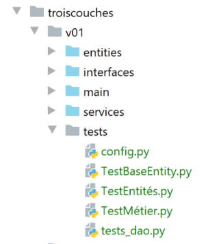
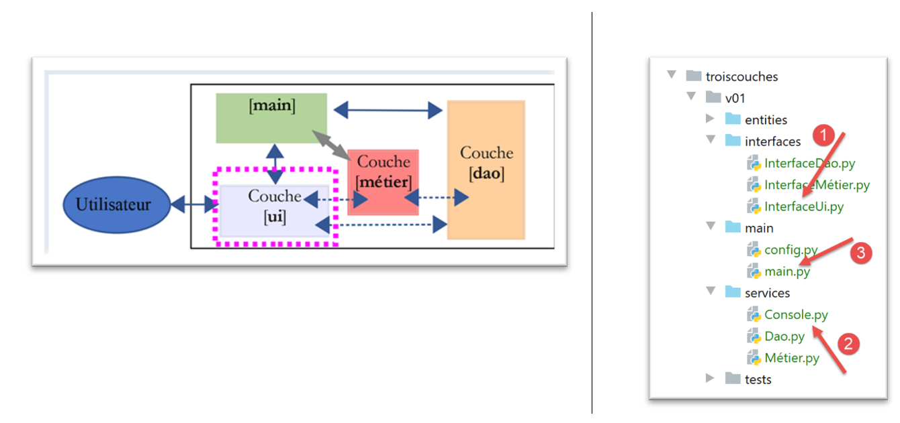
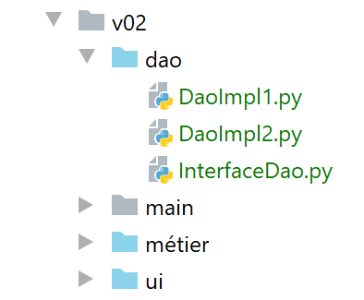
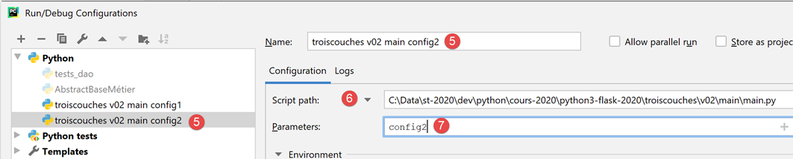

14. Architecture en couches et programmation par interfaces
14.1. Introduction
Nous nous proposons d'écrire une application permettant l'affichage des notes des élèves d'un collège. Cette application peut avoir une architecture multicouche :

- la couche [ui] (User Interface) est la couche en contact avec l'utilisateur de l'application ;
- la couche [métier] implémente les règles de gestion de l'application, tels que le calcul d'un salaire ou d'une facture. Cette couche utilise des données provenant de l'utilisateur via la couche [présentation] et du SGBD via la couche [dao] ;
- la couche [dao] (Data Access Objects) gère l'accès aux données du SGBD (Système de Gestion de Bases de Données).
C'est l'architecture qui avait été utilisée dans le |cours sur Python 2|. On peut également introduire une variante :

Les différences vis à vis de la structure en couches précédente sont les suivantes :
- un script principal appelé [main] ci-dessus organise l'instanciation des couches ;
- les couches [ui, métier, dao] ne communiquent plus forcément entre-elles. Si elles le doivent, le script [main] leur fournit les références des couches dont elles ont besoin ;
Le code est ici organisé en centres de compétences avec un chef d'orchestre :
- le chef d'orchestre est le script principal [main] ;
- les couches [ui], [dao] et [métier] sont les centres de compétences ;
On pourrait appeler cette organisation, une organisation orchestrale.
14.2. Exemple 1
Nous allons illustrer l’architecture en couches avec une application console simple :
- il n'y aura pas de base de données ;
- la couche [dao] gèrera des entités Elève, Classe, Matière, Note permettant de gérer les notes des élèves ;
- la couche [métier] permettra de calculer des indicateurs sur les notes d'un élève précis ;
- la couche [ui] sera une application console qui affichera les résultats des élèves ;
Le projet PyCharm de l'application est le suivant :
 |
Note : les dossiers en bleu font partie des [Sources Root] du projet PyCharm.
14.2.1. Les entités de l'application
On appellera entités, des classes dont le seul rôle est d'encapsuler des données. On pourrait pour ce faire utiliser des dictionnaires. L'intérêt de la classe est de permettre de tester la validité des données stockées dans l'objet et de fournir une méthode fournissant l'identité de l'objet sous la forme d'une chaîne de caractères.
 |
14.2.1.1. L'entité [Classe]
L'entité [Classe] (Classe.py) représente une classe du collège :
# imports
from BaseEntity import BaseEntity
from MyException import MyException
from Utils import Utils
class Classe(BaseEntity):
# attributs exclus de l'état de la classe
excluded_keys = []
# propriétés de la classe
@staticmethod
def get_allowed_keys() -> list:
# id : identifiant de la classe
# nom : nom de la classe
return BaseEntity.get_allowed_keys() + ["nom"]
# getter
@property
def nom(self: object) -> str:
return self.__nom
# setters
@nom.setter
def nom(self: object, nom: str):
# nom doit être une chaîne de caractères non vide
if Utils.is_string_ok(nom):
self.__nom = nom
else:
raise MyException(11, f"Le nom de la classe {self.id} doit être une chaîne de caractères non vide")
Notes
- ligne 7 : l'entité [Classe] dérive de l'entité [BaseEntity] étudiée au paragraphe |La classe BaseEntity| ;
- lignes 11-16 : une classe est définie par un n° id et un nom (ligne 16). La propriété [id] est fournie par la classe [BaseEntity] et le nom par la classe [Classe] ;
- lignes 18-30 : getter / setter de l'attribut [nom] ;
14.2.1.2. L'entité [Matière]
La classe [Matière] (matière.py) est la suivante :
# imports
from BaseEntity import BaseEntity
from MyException import MyException
from Utils import Utils
class Matière(BaseEntity):
# attributs exclus de l'état de la classe
excluded_keys = []
# propriétés de la classe
@staticmethod
def get_allowed_keys() -> list:
# id : identifiant de la matière
# nom : nom de la matière
# coefficient : coefficient de la matière
return BaseEntity.get_allowed_keys() + ["nom", "coefficient"]
# getter
@property
def nom(self: object) -> str:
return self.__nom
@property
def coefficient(self: object) -> float:
return self.__coefficient
# setters
@nom.setter
def nom(self: object, nom: str):
# nom doit être une chaîne de caractères non vide
if Utils.is_string_ok(nom):
self.__nom = nom
else:
raise MyException(21, f"Le nom de la matière {self.id} doit être une chaîne de caractères non vide")
@coefficient.setter
def coefficient(self, coefficient: float):
# le coefficient doit être un réel >=0
erreur = False
if isinstance(coefficient, (int, float)):
if coefficient >= 0:
self.__coefficient = coefficient
else:
erreur = True
else:
erreur = True
# erreur ?
if erreur:
raise MyException(22, f"Le coefficient de la matière {self.nom} doit être un réel >=0")
Notes
- ligne 7 : la classe [Classe] dérive de la classe [BaseEntity] ;
- lignes 11-17 : une matière est définie par son n° [id], son nom [nom], son coefficient [coefficient] ;
- lignes 19-50 : getters / setters des attributs de la classe ;
14.2.1.3. L'entité [Elève]
La classe [Elève] (élève.py) est la suivante :
# imports
from BaseEntity import BaseEntity
from Classe import Classe
from MyException import MyException
from Utils import Utils
class Elève(BaseEntity):
# attributs exclus de l'état de la classe
excluded_keys = []
# propriétés de la classe
@staticmethod
def get_allowed_keys() -> list:
# id : identifiant de l'élève
# nom : nom de l'élève
# prénom : prénom de l'élève
# classe : classe de l'élève
return BaseEntity.get_allowed_keys() + ["nom", "prénom", "classe"]
# getters
@property
def nom(self: object) -> str:
return self.__nom
@property
def prénom(self: object) -> str:
return self.__prénom
@property
def classe(self: object) -> Classe:
return self.__classe
# setters
@nom.setter
def nom(self: object, nom: str) -> str:
# nom doit être une chaîne de caractères non vide
if Utils.is_string_ok(nom):
self.__nom = nom
else:
raise MyException(41, f"Le nom de l'élève {self.id} doit être une chaîne de caractères non vide")
@prénom.setter
def prénom(self: object, prénom: str) -> str:
# prénom doit être une chaîne de caractères non vide
if Utils.is_string_ok(prénom):
self.__prénom = prénom
else:
raise MyException(42, f"Le prénom de l'élève {self.id} doit être une chaîne de caractères non vide")
@classe.setter
def classe(self: object, value):
try:
# on attend un type Classe
if isinstance(value, Classe):
self.__classe = value
# ou un type dict
elif isinstance(value,dict):
self.__classe=Classe().fromdict(value)
# ou un type json
elif isinstance(value,str):
self.__classe = Classe().fromjson(value)
except BaseException as erreur:
raise MyException(43, f"L'attribut [{value}] de l'élève {self.id} doit être de type Classe ou dict ou json. Erreur : {erreur}")
Notes
- ligne 9 : la classe [Elève] dérive de la classe [BaseEntity] ;
- lignes 13-20 : un élève est caractérisé par son n° [id], son nom [nom], son prénom [prénom], sa classe[classe]. Ce dernier paramètre est une référence sur un objet [Classe] ;
- lignes 22-65 : getters / setters des attributs de la classe ;
14.2.1.4. L'entité [Note]
La classe [Note] (note.py) est la suivante :
# imports
from BaseEntity import BaseEntity
from Elève import Elève
from Matière import Matière
from MyException import MyException
class Note(BaseEntity):
# attributs exclus de l'état de la classe
excluded_keys = []
# propriétés de la classe
@staticmethod
def get_allowed_keys() -> list:
# id : identifiant de la note
# valeur : la note elle-même
# élève : élève (de type Elève) concerné par la note
# matière : matière (de type Matière) concernée par la note
# l'objet Note est donc la note d'un élève dans une matière
return BaseEntity.get_allowed_keys() + ["valeur", "élève", "matière"]
# getters
@property
def valeur(self: object) -> float:
return self.__valeur
@property
def élève(self: object) -> Elève:
return self.__élève
@property
def matière(self: object) -> Matière:
return self.__matière
# getters
@valeur.setter
def valeur(self: object, valeur: float):
# la note doit être un réel entre 0 et 20
if isinstance(valeur, (int, float)) and 0 <= valeur <= 20:
self.__valeur = valeur
else:
raise MyException(31,
f"L'attribut {valeur} de la note {self.id} doit être un nombre dans l'intervalle [0,20]")
@élève.setter
def élève(self: object, value):
try:
# on attend un type Elève
if isinstance(value, Elève):
self.__élève = value
# ou un type dict
elif isinstance(value, dict):
self.__élève = Elève().fromdict(value)
# ou un type json
elif isinstance(value, str):
self.__élève = Elève().fromjson(value)
except BaseException as erreur:
raise MyException(32,
f"L'attribut [{value}] de la note {self.id} doit être de type Elève ou dict ou json. Erreur : {erreur}")
@matière.setter
def matière(self: object, value):
try:
# on attend un type Matière
if isinstance(value, Matière):
self.__matière = value
# ou un type dict
elif isinstance(value, dict):
self.__matière = Matière().fromdict(value)
# ou un type json
elif isinstance(value, str):
self.__matière = Matière().fromjson(value)
except BaseException as erreur:
raise MyException(33,
f"L'attribut [{value}] de la note {self.id} doit être de type Matière ou dict ou json. Erreur : {erreur}")
Notes
- ligne 8 : la classe [Note] dérive de la classe [BaseEntity] ;
- lignes 12-20 : un objet [Note] est caractérisé par son n° [id], la valeur de la note [valeur], une référence [élève] sur l'élève qui a cette note, une référence sur la matière [matière] objet de la note ;
- lignes 22-75 : getters / setters des attributs de la classe ;
14.2.2. Configuration de l’application
 |
Le fichier [config.py] configure l’environnement du script principal [main] (1) ainsi que celui des tests (2). Tous ces scripts ont une instruction [import config] en début de code. On rappelle que le dossier contenant le script objet de la commande [python script] fait automatiquement partie du Python Path.Si donc [config] est dans le même dossier que les scripts ayant l’instruction [import config], il sera trouvé. Les fichiers [1] et [2] sont ici identiques. Ce pourrait ne pas être le cas.
Le fichier [config.sys] est le suivant :
def configure():
import os
# chemin absolu du dossier de ce script
script_dir = os.path.dirname(os.path.abspath(__file__))
# root_dir
root_dir="C:/Data/st-2020/dev/python/cours-2020/python3-flask-2020/classes"
# dépendances absolues
absolute_dependencies=[
# les dossiers locaux contenant des classes et interfaces
f"{root_dir}/02/entities",
f"{script_dir}/../entities",
f"{script_dir}/../interfaces",
f"{script_dir}/../services",
]
# mise à jour du syspath
from myutils import set_syspath
set_syspath(absolute_dependencies)
# on rend la config
return {}
- lignes 11-14 : les dossiers qui doivent faire partie du Python Path (sys.path) ;
- le dossier [f"{root_dir}/02/entities"] donne accès aux classes [BaseEntity] et [MyException] ;
- le dossier [f"{script_dir}/../entities"] donne accès aux classes [Elève], [Classe], [Matière], [Note] ;
- le dossier [f"{script_dir}/../interfaces",] donne accès aux interfaces de l’application ;
- le dossier [f"{script_dir}/../services"] donne accès aux classes implémentant les interfaces ;
14.2.3. Tests des entités
 |
Nous allons ici écrire des tests exécutés par un outil appelé [unittest]. PyCharm vient avec plusieurs frameworks de test. Le choix de l’un d’eux se fait dans la configuration de PyCharm :

- en [4], plusieurs frameworks de test sont disponibles :

14.2.3.1. La classe de tests [TestBaseEntity]
Le script de test [TestBaseEntity] sera le suivant :
import unittest
# on configure l'application
import config
config = config.configure()
class TestBaseEntity (unittest.TestCase):
def test_note1(self):
# imports
from Note import Note
from Elève import Elève
from Classe import Classe
from Matière import Matière
# construction d'une note à partir d'une chaîne jSON
note = Note().fromjson(
'{"id": 8, "valeur": 12, "élève": {"id": 42, "nom": "nom4", "prénom": "prénom4", "classe": {"id": 2, "nom": "classe2"}}, "matière": {"id": 2, "nom": "matière2", "coefficient": 2}}')
# vérifications
self.assertIsInstance(note, Note)
self.assertIsInstance(note.élève, Elève)
self.assertIsInstance(note.élève.classe, Classe)
self.assertIsInstance(note.matière, Matière)
def test_note2(self):
# imports
from Note import Note
from Elève import Elève
from Classe import Classe
from Matière import Matière
# construction d'une note à partir d'un dictionnaire
note = Note().fromdict(
{"id": 8, "valeur": 12, "élève": {"id": 42, "nom": "nom4", "prénom": "prénom4",
"classe": {"id": 2, "nom": "classe2"}},
"matière": {"id": 2, "nom": "matière2", "coefficient": 2}})
# vérifications
self.assertIsInstance(note, Note)
self.assertIsInstance(note.élève, Elève)
self.assertIsInstance(note.élève.classe, Classe)
self.assertIsInstance(note.matière, Matière)
if __name__ == '__main__':
unittest.main()
Notes
- ligne 1 : on importe le module [unittest] qui va fournir les différentes méthodes de test ;
- lignes 3-6 : on configure l’application pour que les classes nécessaires aux tests soient trouvées ;
- ligne 9 : une classe de test [unittest] doit étendre la classe [unittest.TestCase] ;
- lignes 11, 27 : les fonctions de test doivent avoir un nom commençant par [test] sinon elles ne seront pas reconnues ;
- lignes 13-16 : on importe les classes dont on a besoin ;
- dans cette classe de test, on veut vérifier le comportement des méthodes [BaseEntity.fromdict] (ligne 34) et [BaseEntity.fromjson] (ligne 18). La classe [Note] a des propriétés qui sont des références à d’autres classes. On veut vérifier que les deux méthodes précédentes créent des objets [Note] valides ;
- ligne 18 : on crée un objet [Note] à partir d’un objet jSON ;
- ligne 21 : on vérifie que l’objet créé est bien de type [Note]. La méthode [assertIsInstance] est une méthode de la classe [unittest.TestCase], classe parent de la classe [TestBaseEntity] ;
- ligne 22 : on vérifie que [note.élève] est bien de type [Elève] ;
- ligne 23 : on vérifie que [note.élève.classe] est bien de type [Classe] ;
- ligne 24 : on vérifie que [note.matière] est bien de type [Matière] ;
- lignes 33-42 : on fait de même avec la méthode [BaseEntity.fromdict] ;
Il y a plusieurs façon d’exécuter les tests :
 |
- en [1-2], on exécute [TestBaseEntity] avec le framework [UnitTest] ;
- en [3-5], les tests échouent. [UnitTests] indique qu’il n’a trouvé aucun test à exécuter ;
L’échec des tests vient de l’organisation du code de [TestBaseEntity] :
import unittest
# on configure l'application
import config
config = config.configure()
class TestBaseEntity(unittest.TestCase):
Ce qui gêne le framework [UnitTest], c’est la présence de code exécutable, lignes 3-6, avant la définition de la classe de test, ligne 9.
On réorganise alors le code de la façon suivante :
import unittest
class TestBaseEntity(unittest.TestCase):
def setUp(self):
# on configure l'application
import config
config.configure()
def test_note1(self):
…
def test_note2(self):
…
if __name__ == '__main__':
unittest.main()
- lignes 6-10 : on définit une fonction [setUp]. Cette fonction a un rôle particulier : elle est exécutée avant chaque fonction de test (test_note1, test_note2) ;
Ceci fait, l’exécution de la classe [TestBaseEntity] donne les résultats suivants :
 |
Cette fois-ci les deux méthodes de test ont été exécutées et les tests ont été réussis.
Voyons ce qui se passe lorsqu’un test échoue. Modifions le code de [test_note1] de la façon suivante :
def test_note1(self):
# erreur volontaire - on vérifie que 1==2
self.assertEqual(1,2)
# imports
from Note import Note
…
- ligne 2 : on vérifie que 1==2 ;
Les résultats de l’exécution sont alors les suivants :
 |
On peut connaître la cause de l’erreur en cliquant sur le test raté [2] :
 |
- en [7-8], la cause de l’erreur ;
Une autre façon d’exécuter une classe de tests est de l’exécuter dans un terminal :
 |
(venv) C:\Data\st-2020\dev\python\cours-2020\python3-flask-2020\troiscouches\v01\tests>python -m unittest TestBaseEntity.py
..
----------------------------------------------------------------------
Ran 2 tests in 0.026s
OK
La ligne 6 indique que les deux tests ont réussi (on a enlevé l’erreur 1==2) ;
Enfin une troisème façon d’exécuter la classe de tests [TestBaseEntity], toujours dans un terminal, est la suivante. On termine la classe de tests avec les lignes 6-7 suivantes ;
…
self.assertIsInstance(note.élève.classe, Classe)
self.assertIsInstance(note.matière, Matière)
if __name__ == '__main__':
unittest.main()
- ligne 6 : la variable [__name__] est le nom donné au script qui s’exécute. Lorsque le script est le script lancé par la commande [python script.py], la variable [__name__] vaut [__main__] (2 caractères soulignés avant et après l’identifiant). Ainsi la ligne 7 n’est exécutée que lorsque le script [TestBaseEntity] est lancé par la commande [python TestBaseEntity.py]. L’instruction [unittest.main()] lance l’exécution du script par le framework [UnitTest]. Voici un exemple :
(venv) C:\Data\st-2020\dev\python\cours-2020\python3-flask-2020\troiscouches\v01\tests>python TestBaseEntity.py
..
----------------------------------------------------------------------
Ran 2 tests in 0.013s
OK
14.2.3.2. La classe de tests [TestEntités]
La classe de tests [TestEntités] est la suivante :
import unittest
class TestEntités(unittest.TestCase):
def setUp(self):
# on configure l'application
import config
config.configure()
def test_code1a(self):
# imports
from Elève import Elève
from MyException import MyException
# code d'erreur
code = None
try:
# id invalide
Elève().fromdict({"id": "x", "nom": "y", "prénom": "z", "classe": "t"})
except MyException as ex:
print(f"\ncode erreur={ex.code}, message={ex}")
code = ex.code
# vérification
self.assertEqual(code, 1)
def test_code41(self):
# imports
from Elève import Elève
from MyException import MyException
# code d'erreur
code = None
try:
# nom invalide
Elève().fromdict({"id": 1, "nom": "", "prénom": "z", "classe": "t"})
except MyException as ex:
print(f"\ncode erreur={ex.code}, message={ex}")
code = ex.code
# vérification
self.assertEqual(code, 41)
def test_code42(self):
# imports
from Elève import Elève
from MyException import MyException
# code d'erreur
code = None
try:
# prénom invalide
Elève().fromdict({"id": 1, "nom": "y", "prénom": "", "classe": "t"})
except MyException as ex:
print(f"\ncode erreur={ex.code}, message={ex}")
code = ex.code
# vérification
self.assertEqual(code, 42)
def test_code43(self):
# imports
from Elève import Elève
from MyException import MyException
# code d'erreur
code = None
try:
# classe invalide
Elève().fromdict({"id": 1, "nom": "y", "prénom": "z", "classe": "t"})
except MyException as ex:
print(f"\ncode erreur={ex.code}, message={ex}")
code = ex.code
# vérification
self.assertEqual(code, 43)
def test_code1b(self):
# imports
from Classe import Classe
from MyException import MyException
# code d'erreur
code = None
try:
# identifiant invalide
Classe().fromdict({"id": "x", "nom": "y"})
except MyException as ex:
print(f"\ncode erreur={ex.code}, message={ex}")
code = ex.code
# vérification
self.assertEqual(code, 1)
def test_code11(self):
# imports
from Classe import Classe
from MyException import MyException
# code d'erreur
code = None
try:
# nom invalide
Classe().fromdict({"id": 1, "nom": ""})
except MyException as ex:
code = ex.code
# vérification
self.assertEqual(code, 11)
def test_code1c(self):
# imports
from Matière import Matière
from MyException import MyException
# code d'erreur
code = None
try:
# identifiant invalide
Matière().fromdict({"id": "x", "nom": "y", "coefficient": "t"})
except MyException as ex:
print(f"\ncode erreur={ex.code}, message={ex}")
code = ex.code
# vérification
self.assertEqual(code, 1)
def test_code21(self):
# imports
from Matière import Matière
from MyException import MyException
# code d'erreur
code = None
try:
# nom invalide
Matière().fromdict({"id": "1", "nom": "", "coefficient": "t"})
except MyException as ex:
print(f"\ncode erreur={ex.code}, message={ex}")
code = ex.code
# vérification
self.assertEqual(code, 21)
def test_code22(self):
# imports
from Matière import Matière
from MyException import MyException
# code d'erreur
code = None
try:
# coefficient invalide
Matière().fromdict({"id": 1, "nom": "y", "coefficient": "t"})
except MyException as ex:
print(f"\ncode erreur={ex.code}, message={ex}")
code = ex.code
# vérification
self.assertEqual(code, 22)
def test_code1d(self):
# imports
from Note import Note
from MyException import MyException
# code d'erreur
code = None
try:
# identifiant invalide
Note().fromdict({"id": "x", "valeur": "x", "élève": "y", "matière": "z"})
except MyException as ex:
print(f"\ncode erreur={ex.code}, message={ex}")
code = ex.code
# vérification
self.assertEqual(code, 1)
def test_code31(self):
# imports
from Note import Note
from MyException import MyException
# code d'erreur
code = None
try:
# valeur invalide
Note().fromdict({"id": 1, "valeur": "x", "élève": "y", "matière": "z"})
except MyException as ex:
print(f"\ncode erreur={ex.code}, message={ex}")
code = ex.code
# vérification
self.assertEqual(code, 31)
def test_code32(self):
# imports
from Note import Note
from MyException import MyException
# code d'erreur
code = None
try:
# élève invalide
Note().fromdict({"id": 1, "valeur": 10, "élève": "y", "matière": "z"})
except MyException as ex:
print(f"\ncode erreur={ex.code}, message={ex}")
code = ex.code
# vérification
self.assertEqual(code, 32)
def test_code33(self):
# imports
from Elève import Elève
from Note import Note
from Classe import Classe
from MyException import MyException
# code d'erreur
code = None
try:
# matière invalide
classe = Classe().fromdict({"id": 1, "nom": "x"})
élève = Elève().fromdict({"id": 1, "nom": "a", "prénom": "b", "classe": classe})
Note().fromdict({"id": 1, "valeur": 10, "élève": élève, "matière": "z"})
except MyException as ex:
print(f"\ncode erreur={ex.code}, message={ex}")
code = ex.code
# vérification
self.assertEqual(code, 33)
def test_exception(self):
# imports
from Elève import Elève
# le test doit lancer le type [MyException] pour réussir
from MyException import MyException
with self.assertRaises(MyException):
# le test
Elève().fromdict({"id": "x", "nom": "y", "prénom": "z", "classe": "t"})
if __name__ == '__main__':
unittest.main()
- le script de test a pour but de tester les setters des classes : vérifier qu'on ne peut pas attribuer des valeurs incorrectes aux attributs des différentes entités ;
- lignes 11-24 : on teste qu'on ne peut pas passer un identifiant invalide à un élève. Parce qu'on passe la valeur 'x', ligne 16, comme identifiant de l'élève, on s'attend à avoir une exception. On devrait donc passer dans les lignes 20-22 ;
- ligne 21 : affichage du message d'erreur ;
- ligne 22 : on récupère le code de l'erreur (cf paragraphe |L'entité MyException|) ;
- ligne 24 : on vérifie (assert) que le code d'erreur est 1. Ici, on vérifie deux choses :
- qu'il y a bien eu erreur ;
- que le code d'erreur est 1 ;
- ce processus est répété avec les fonctions des lignes 24-213 ;
- lignes 215-222 : on teste qu'une action lève une exception d'un certain type ;
- ligne 220 : on indique que le test est réussi s'il lève une exception de type [MyException] ;
Résultats
On exécute le script de test :
 |
Les résultats obtenus sont les suivants :
Testing started at 09:39 ...
C:\Data\st-2020\dev\python\cours-2020\python3-flask-2020\venv\Scripts\python.exe "C:\Program Files\JetBrains\PyCharm Community Edition 2020.1.2\plugins\python-ce\helpers\pycharm\_jb_unittest_runner.py" --path C:/Data/st-2020/dev/python/cours-2020/python3-flask-2020/troiscouches/v01/tests/TestEntités.py
Launching unittests with arguments python -m unittest C:/Data/st-2020/dev/python/cours-2020/python3-flask-2020/troiscouches/v01/tests/TestEntités.py in C:\Data\st-2020\dev\python\cours-2020\python3-flask-2020\troiscouches\v01\tests
code erreur=1, message=MyException[1, L'identifiant d'une entité <class 'Elève.Elève'> doit être un entier >=0]
code erreur=1, message=MyException[1, L'identifiant d'une entité <class 'Classe.Classe'> doit être un entier >=0]
code erreur=1, message=MyException[1, L'identifiant d'une entité <class 'Matière.Matière'> doit être un entier >=0]
code erreur=1, message=MyException[1, L'identifiant d'une entité <class 'Note.Note'> doit être un entier >=0]
code erreur=21, message=MyException[21, Le nom de la matière 1 doit être une chaîne de caractères non vide]
code erreur=22, message=MyException[22, Le coefficient de la matière y doit être un réel >=0]
code erreur=31, message=MyException[31, L'attribut x de la note 1 doit être un nombre dans l'intervalle [0,20]]
code erreur=32, message=MyException[32, L'attribut [y] de la note 1 doit être de type Elève ou dict ou json. Erreur : Expecting value: line 1 column 1 (char 0)]
code erreur=33, message=MyException[33, L'attribut [z] de la note 1 doit être de type Matière ou dict ou json. Erreur : Expecting value: line 1 column 1 (char 0)]
code erreur=41, message=MyException[41, Le nom de l'élève 1 doit être une chaîne de caractères non vide]
code erreur=42, message=MyException[42, Le prénom de l'élève 1 doit être une chaîne de caractères non vide]
code erreur=43, message=MyException[43, L'attribut [t] de l'élève 1 doit être de type Classe ou dict ou json. Erreur : Expecting value: line 1 column 1 (char 0)]
Ran 14 tests in 0.040s
OK
Process finished with exit code 0
Ici, tous les tests ont été réussis
14.2.4. La couche [dao]

La couche [dao] implémente l’interface [InterfaceDao] [1]. Celle-ci est implémentée par la classe [Dao] (2). Le script [tests_dao] (3) teste les méthodes de la couche [dao].
14.2.4.1. Interface [InterfaceDao]
Une interface est un contrat passé entre code appelant et code appelé. C’est le code appelé qui offre l’interface :
 |
- le code appelant [1] ne connait pas l’implémentation du code appelé [3]. Il ne connaît que la façon de l’appeler. C’est l’interface [2] qui le lui indique. Celle-ci définit un certain nombre de méthodes / fonctions à utiliser pour interagir avec le code appelé. On appelle également API (Application Programming Interface) cette interface ;
La couche [dao] offrira l'interface suivante :
- [get_classes] rend la liste des classes du collège ;
- [get_matières] rend la liste des matières enseignées au collège ;
- [get_élèves] rend la liste des élèves du collège ;
- [get_notes] rend la liste des notes de tous les élèves ;
- [get_notes_for_élève_by_id] rend les notes d’un élève particulier ;
- [get_élève_by_id] rend un élève repéré par son n° ;
Le code appelant n'utilisera que ces méthodes. Il n'a pas à savoir comment elles sont implémentées. Les données peuvent alors provenir de différentes sources (en dur, d'une base de données, de fichiers texte…) sans que cela impacte le code appelant. On appelle cela la programmation par interfaces.
Python 3 a une notion qui s'approche de celle d'interface : la classe abstraite. Nous allons l'utiliser. Nous allons regrouper les interfaces de cet exemple dans le dossier [interfaces].
Nous définissons une classe abstraite [InterfaceDao] (InterfaceDao.py) pour la couche [dao] :
# imports
from abc import ABC, abstractmethod
# interface Dao
from Elève import Elève
class InterfaceDao(ABC):
# liste des classes
@abstractmethod
def get_classes(self: object) -> list:
pass
# liste des élèves
@abstractmethod
def get_élèves(self: object) -> list:
pass
# liste des matières
@abstractmethod
def get_matières(self: object) -> list:
pass
# liste des notes
@abstractmethod
def get_notes(self: object) -> list:
pass
# liste des notes d'un élève
@abstractmethod
def get_notes_for_élève_by_id(self: object, élève_id: int) -> list:
pass
# chercher un élève par son id
@abstractmethod
def get_élève_by_id(self, élève_id: int) -> Elève:
pass
Notes :
- ligne 2 : ABC=Abstract Base Class. On importe du module [abc], la classe ABC ainsi que le décorateur [abstractmethod] utilisé aux lignes 10, 15, 20, 25, 30 et 35 ;
- ligne 8 : la classe abstraite s'appelle [InterfaceDao] et dérive de la classe [ABC] ;
- les méthodes de la classe abstraite sont décorées avec le décorateur [@abstractmethod] qui fait de la méthode ainsi décorée une méthode abstraite : son code n'est pas défini. Néanmoins, on y met du code : l’instruction [pass] qui ne fait rien ;
- la classe abstraite [InterfaceDao] ne peut être instanciée. Seules peuvent l'être les classes dérivées de [InterfaceDao] ayant implémenté toutes les méthodes de [InterfaceDao]. Si donc on crée deux classes [Dao1] et [Dao2] dérivant de la classe [InterfaceDao], elles implémenteront toutes deux les méthodes abstraites de [InterfaceDao]. On pourrait dire ainsi qu'elles implémentent l'interface [InterfaceDao] ;
- les langages implémentant à la fois les interfaces et les classes abstraites donnent à l'interface un rôle différent de celui de la classe abstraite. Une interface n'a pas d'attributs et ne peut être instanciée. Une classe peut implémenter une interface en définissant toutes les méthodes de celle-ci ;
14.2.4.2. Implémentation [Dao]
La classe [Dao] (dao.py) implémente l'interface [InterfaceDao] de la façon suivante :
# import des entités et des interfaces
from Classe import Classe
from Elève import Elève
from InterfaceDao import InterfaceDao
from Matière import Matière
from MyException import MyException
from Note import Note
# couche [dao] implémente l'interface InterfaceDao
class Dao(InterfaceDao):
# constructeur
# on construit des listes en dur
def __init__(self):
# on instancie les classes
classe1 = Classe().fromdict({"id": 1, "nom": "classe1"})
classe2 = Classe().fromdict({"id": 2, "nom": "classe2"})
self.classes = [classe1, classe2]
# les matières
matière1 = Matière().fromdict({"id": 1, "nom": "matière1", "coefficient": 1})
matière2 = Matière().fromdict({"id": 2, "nom": "matière2", "coefficient": 2})
self.matières = [matière1, matière2]
# les élèves
élève11 = Elève().fromdict({"id": 11, "nom": "nom1", "prénom": "prénom1", "classe": classe1})
élève21 = Elève().fromdict({"id": 21, "nom": "nom2", "prénom": "prénom2", "classe": classe1})
élève32 = Elève().fromdict({"id": 32, "nom": "nom3", "prénom": "prénom3", "classe": classe2})
élève42 = Elève().fromdict({"id": 42, "nom": "nom4", "prénom": "prénom4", "classe": classe2})
self.élèves = [élève11, élève21, élève32, élève42]
# les notes des élèves dans les différentes matières
note1 = Note().fromdict({"id": 1, "valeur": 10, "élève": élève11, "matière": matière1})
note2 = Note().fromdict({"id": 2, "valeur": 12, "élève": élève21, "matière": matière1})
note3 = Note().fromdict({"id": 3, "valeur": 14, "élève": élève32, "matière": matière1})
note4 = Note().fromdict({"id": 4, "valeur": 16, "élève": élève42, "matière": matière1})
note5 = Note().fromdict({"id": 5, "valeur": 6, "élève": élève11, "matière": matière2})
note6 = Note().fromdict({"id": 6, "valeur": 8, "élève": élève21, "matière": matière2})
note7 = Note().fromdict({"id": 7, "valeur": 10, "élève": élève32, "matière": matière2})
note8 = Note().fromdict({"id": 8, "valeur": 12, "élève": élève42, "matière": matière2})
self.notes = [note1, note2, note3, note4, note5, note6, note7, note8]
# -----------
# interface IDao
# -----------
Notes :
- lignes 1-7 : on importe les entités et l'interface [InterfaceDao] ;
- ligne 11 : la classe [Dao] dérive de la classe abstraite [InterfaceDao]. Nous dirons qu'elle implémente l'interface [InterfaceDao] ;
- ligne 14 : le constructeur n'a pas de paramètres. Il construit en dur quatre listes :
- lignes 15-18 : la liste des classes ;
- lignes 19-22 : la liste des matières ;
- lignes 23-28 : la liste des élèves ;
- lignes 29-38 : la liste des notes ;
- lignes 40-44 : implémentation des méthodes de l’interface [Interface Dao]. Ici, nous ne les définissons pas pour voir le message d’erreur émis par Python ;
Un programme de test pourrait être le suivant [tests-dao.py] :
# on configure l'application
import config
config = config.configure()
# instanciation couche [dao]
from Dao import Dao
daoImpl = Dao()
# liste des classes
for classe in daoImpl.get_classes():
print(classe)
# liste des matières
for matière in daoImpl.get_matières():
print(matière)
# liste des classes
for élève in daoImpl.get_élèves():
print(élève)
# liste des notes
for note in daoImpl.get_notes():
print(note)
Note : le script [tests-dao.py] n'est pas un test [unittest] car il ne contient pas de méthodes avec un nom commençant par [test_].
Les commentaires se suffisent à eux-mêmes. Les lignes 11-25 utilisent l'interface de la couche [dao]. Il n'y a pas là d'hypothèses sur l'implémentation réelle de la couche. Ligne 9, on instancie la couche [dao].
Les résultats de l'exécution de ce script sont les suivants :
C:\Data\st-2020\dev\python\cours-2020\python3-flask-2020\venv\Scripts\python.exe C:/Data/st-2020/dev/python/cours-2020/python3-flask-2020/troiscouches/v01/tests/tests_dao.py
Traceback (most recent call last):
File "C:/Data/st-2020/dev/python/cours-2020/python3-flask-2020/troiscouches/v01/tests/tests_dao.py", line 9, in <module>
daoImpl = Dao()
TypeError: Can't instantiate abstract class Dao with abstract methods get_classes, get_matières, get_notes, get_notes_for_élève_by_id, get_élève_by_id, get_élèves
Process finished with exit code 1
On voit qu'une erreur se produit dès l'instanciation de la classe [Dao] (ligne 3 ci-dessus). L'interpréteur Python 3 nous dit qu'il ne peut instancier la classe, ceci parce que nous n'avons pas défini les méthodes abstraites [get_classes, get_matières, get_notes, get_notes_for_élève_by_id, get_élève_by_id, get_élèves].
Pycharm a également la notion de classe abstraite et nous propose de définir les méhodes de celle-ci :
 |
- en [1], cliquer droit sur le code ;
- en [2-3], choisir [Generate / Implement Methods] pour implémenter les méthodes manquantes de la classe [Dao] ;
- en [4], choisir les méthodes à implémenter, ici toutes ;
Ceci fait, la classe [Dao] est complétée par PyCharm de la façon suivante :
# -----------
# interface IDao
# -----------
def get_classes(self: object) -> list:
pass
def get_élèves(self: object) -> list:
pass
def get_matières(self: object) -> list:
pass
def get_notes(self: object) -> list:
pass
def get_notes_for_élève_by_id(self: object, élève_id: int) -> list:
pass
def get_élève_by_id(self, élève_id: int) -> Elève:
pass
Nous complétons la classe [Dao] de la façon suivante :
# -----------
# interface IDao
# -----------
# liste des classes
def get_classes(self) -> list:
return self.classes
# liste des matières
def get_matières(self) -> list:
return self.matières
# liste des élèves
def get_élèves(self) -> list:
return self.élèves
# liste des notes
def get_notes(self) -> list:
return self.notes
def get_notes_for_élève_by_id(self, élève_id: int) -> dict:
# on recherche l'élève
élève = self.get_élève_by_id(élève_id)
# on récupère ses notes
notes = list(filter(lambda n: n.élève.id == élève_id, self.get_notes()))
# on rend le résultat
return {"élève": élève, "notes": notes}
def get_élève_by_id(self, élève_id: int) -> Elève:
# on filtre les élèves
élèves = list(filter(lambda e: e.id == élève_id, self.get_élèves()))
# trouvé ?
if not élèves:
raise MyException(10, f"L'élève d'identifiant {élève_id} n'existe pas")
# résultat
return élèves[0]
- les lignes 5-19 ne posent pas de difficultés ;
- lignes 29-36 : la méthode qui rend l’élève dont on passe le numéro. Si l’élève n’existe pas, une exception est levée ;
- ligne 31 : la fonction [filter] permet de filtrer une liste :
- le 1er paramètre est le critère de filtrage ;
- le second paramètre est la liste à filtrer, ici la liste des élèves ;
- ligne 31 : le critère de filtrage de la liste est implémenté à l’aide d’une fonction [f(e :Elève)->bool]. Celle-ci est appliquée à chacun des éléments de la liste à filtrer. Si l’élément satisfait le critère de filtrage, il est retenu dans la liste filtrée, sinon il en est exclu. On peut ici soit :
- donner le nom de la fonction f et implémenter celle-ci ailleurs. L’appel à la fonction [filter] devient alors [filter(f,self.get_élèves()] ;
- donner la définition de la fonction f. L’appel à la fonction [filter] devient alors [filter(f(e :Elève){…},self.get_élèves()] où [e] représente un élément de la liste filtrée, ç-à-d un élève. C’est ce qui a été fait ici. La définition de la fonction f serait ici [f(e :Elève){return e.id==élève_id)] : un élève n’est retenu que si non n° [id] est égal à celui cherché. Une telle fonction peut être remplacée par une fonction dite lambda : [lambda e: e.id == élève_id] :
- e : représente le paramètre de la fonction f, ici un élève. On peut utiliser le nom que l’on veut ;
- e.id==élève_id est le critère de filtrage : un élève [e] n’est retenu que si son n° [id] correspond à celui qui est cherché ;
- ligne 31 : la fonction [filter] rend la liste filtrée sous un type qui n’est pas le type [list] mais qui supporte d’être transformé en type [list]. C’est ce que nous faisons ici avec l’expression [list(liste filtrée)] ;
- lignes 33-34 : si la liste filtrée est vide c’est que l’élève cherché n’existe pas. On lève alors une exception ;
- ligne 36 : si on arrive ici, c’est qu’il n’y a pas eu d’exception. On sait alors qu’on a récupéré une liste à 1 élément (il n’y a pas deux élèves ayant le même n° [id]). On rend donc le 1er élément de la liste ;
- lignes 21-27 : la méthode [get_notes_for_élève_by_id] doit rendre les notes de l’élève dont on lui passe le n° [id] ;
- lignes 22-23 : on commence par rechercher l’élève de n° [élève_id] à l’aide de la méthode [get_élève_by_id] que l’on vient de commenter. Il peut se produire une exception si l’élève cherché n’existe pas. Comme il n’y a pas de try / catch autour de l’instruction de la ligne 23, l’exception remontera au code appelant. C’est ce qui est désiré ;
- lignes 24-25 : une fois l’élève récupéré, on récupère toutes ses notes. On le fait de nouveau avec un filtre :
- le filtre est [filter(critère, self_getnotes()]. La liste à filtrer est donc la liste de toutes les notes de tous les élèves du collège ;
- le critère de filtrage est exprimé à l’aide d’une fonction [lambda] : lambda n: n.élève.id == élève_id. Le paramètre n est un élément de la liste à filtrer, donc une note. Le type [Note] a une propriété [élève] qui représente l’élève propriétaire de la note. Il faut alors que [n.élève.id] qui représente le n° de cet élève soit égal au numéro de l’élève cherché ;
Puis nous exécutons le script [tests-dao.py].
# on configure l'application
import config
config = config.configure()
# instanciation couche [dao]
from Dao import Dao
daoImpl = Dao()
# liste des classes
for classe in daoImpl.get_classes():
print(classe)
# liste des matières
for matière in daoImpl.get_matières():
print(matière)
# liste des classes
for élève in daoImpl.get_élèves():
print(élève)
# liste des notes
for note in daoImpl.get_notes():
print(note)
# un élève particulier
print(daoImpl.get_élève_by_id(11))
# la liste de ses notes
dict1 = daoImpl.get_notes_for_élève_by_id(11)
print(f"élève n° 11 = {dict1['élève']}")
for note in dict1["notes"]:
print(f"note de l'élève n° 11 = {note}")
Nous obtenons alors les résultats suivants :
C:\Data\st-2020\dev\python\cours-2020\python3-flask-2020\venv\Scripts\python.exe C:/Data/st-2020/dev/python/cours-2020/python3-flask-2020/troiscouches/v01/tests/tests_dao.py
{"id": 1, "nom": "classe1"}
{"id": 2, "nom": "classe2"}
{"id": 1, "nom": "matière1", "coefficient": 1}
{"id": 2, "nom": "matière2", "coefficient": 2}
{"id": 11, "nom": "nom1", "prénom": "prénom1", "classe": {"id": 1, "nom": "classe1"}}
{"id": 21, "nom": "nom2", "prénom": "prénom2", "classe": {"id": 1, "nom": "classe1"}}
{"id": 32, "nom": "nom3", "prénom": "prénom3", "classe": {"id": 2, "nom": "classe2"}}
{"id": 42, "nom": "nom4", "prénom": "prénom4", "classe": {"id": 2, "nom": "classe2"}}
{"id": 1, "valeur": 10, "élève": {"id": 11, "nom": "nom1", "prénom": "prénom1", "classe": {"id": 1, "nom": "classe1"}}, "matière": {"id": 1, "nom": "matière1", "coefficient": 1}}
{"id": 2, "valeur": 12, "élève": {"id": 21, "nom": "nom2", "prénom": "prénom2", "classe": {"id": 1, "nom": "classe1"}}, "matière": {"id": 1, "nom": "matière1", "coefficient": 1}}
{"id": 3, "valeur": 14, "élève": {"id": 32, "nom": "nom3", "prénom": "prénom3", "classe": {"id": 2, "nom": "classe2"}}, "matière": {"id": 1, "nom": "matière1", "coefficient": 1}}
{"id": 4, "valeur": 16, "élève": {"id": 42, "nom": "nom4", "prénom": "prénom4", "classe": {"id": 2, "nom": "classe2"}}, "matière": {"id": 1, "nom": "matière1", "coefficient": 1}}
{"id": 5, "valeur": 6, "élève": {"id": 11, "nom": "nom1", "prénom": "prénom1", "classe": {"id": 1, "nom": "classe1"}}, "matière": {"id": 2, "nom": "matière2", "coefficient": 2}}
{"id": 6, "valeur": 8, "élève": {"id": 21, "nom": "nom2", "prénom": "prénom2", "classe": {"id": 1, "nom": "classe1"}}, "matière": {"id": 2, "nom": "matière2", "coefficient": 2}}
{"id": 7, "valeur": 10, "élève": {"id": 32, "nom": "nom3", "prénom": "prénom3", "classe": {"id": 2, "nom": "classe2"}}, "matière": {"id": 2, "nom": "matière2", "coefficient": 2}}
{"id": 8, "valeur": 12, "élève": {"id": 42, "nom": "nom4", "prénom": "prénom4", "classe": {"id": 2, "nom": "classe2"}}, "matière": {"id": 2, "nom": "matière2", "coefficient": 2}}
{"id": 11, "nom": "nom1", "prénom": "prénom1", "classe": {"id": 1, "nom": "classe1"}}
élève n° 11 = {"id": 11, "nom": "nom1", "prénom": "prénom1", "classe": {"id": 1, "nom": "classe1"}}
note de l'élève n° 11 = {"id": 1, "valeur": 10, "élève": {"id": 11, "nom": "nom1", "prénom": "prénom1", "classe": {"id": 1, "nom": "classe1"}}, "matière": {"id": 1, "nom": "matière1", "coefficient": 1}}
note de l'élève n° 11 = {"id": 5, "valeur": 6, "élève": {"id": 11, "nom": "nom1", "prénom": "prénom1", "classe": {"id": 1, "nom": "classe1"}}, "matière": {"id": 2, "nom": "matière2", "coefficient": 2}}
Process finished with exit code 0
On pourra remarquer que lorsqu’on affiche une note (pour les autres objets, c’est similaire), on a également :
- l’élève propriétaire de la note ;
- la matière référencée par la note ;
C’est la fonction [BaseEntity.asdict] qui produit ce résultat (cf. paragraphe lien).
14.2.5. La couche [métier]
 |  |
- [InterfaceMétier] est l’interface de la couche [métier] ;
- [Métier] est la classe d’implémentation de la couche [métier] ;
- [Testmétier] est une classe [UnitTest] de test de la classe [Métier] ;
14.2.5.1. Interface [InterfaceMétier]
La couche [métier] implémentera l'interface [InterfaceMétier] suivante (InterfaceMétier.py) :
# imports
from abc import ABC, abstractmethod
from StatsForElève import StatsForElève
# interface Métier
class InterfaceMétier(ABC):
# calcul de statistiques pour un élève
@abstractmethod
def get_stats_for_élève(self, idElève: int) -> StatsForElève:
pass
- [get_stats_for_élève] rend les notes de l'élève n° idElève ainsi que des informations sur celles-ci : moyenne pondérée, note la plus basse, note la plus haute. Ces informations sont encapsulées dans un objet de type [StatsForElève] ;
14.2.5.2. L'entité [StatsForElève]
Le type [StatsForElève] (StatsForElève.py) qui encapsule les statistiques (notes, min, max, moyenne pondérée) d'un élève est le suivant :
# imports
from BaseEntity import BaseEntity
# statistiques d'un élève particulier
class StatsForElève(BaseEntity):
# attributs exclus de l'état de la classe
excluded_keys = []
# propriétés de la classe
@staticmethod
def get_allowed_keys() -> list:
# id : identifiant de la note
# élève : l'élève concerné
# notes : ses notes
# moyennePondérée : sa moyenne pondérée par les coefficients des matières
# min : sa note minimale
# max : sa note maximale
return BaseEntity.get_allowed_keys() + ["élève", "notes", "moyenne_pondérée", "min", "max"]
# toString
def __str__(self) -> str:
# cas de l'élève sans notes
if len(self.notes) == 0:
return f"Elève={self.élève}, notes=[]"
# cas de l'élève avec notes
str = ""
for note in self.notes:
str += f"{note.valeur} "
return f"Elève={self.élève}, notes=[{str.strip()}], max={self.max}, min={self.min}, " \
f"moyenne pondérée={self.moyenne_pondérée:4.2f}"
Notes :
- ligne 8 : la classe [StatsForElève] dérive de la classe [BaseEntity] ;
- lignes 13-22 : les propriétés de la classe ;
- un identifiant [id] provenant de [BaseEntity] ;
- l'élève [élève] dont on encapsile les statistiques ;
- ses notes [notes] ;
- sa moyenne pondérée [moyenne_pondérée] ;
- sa note minimale [min] ;
- sa note maximale [max] ;
- on ne définit pas de getters / setters pour ces attributs. On part du principe que c'est la couche [métier] qui crée des objets de ce type et que celle-ci ne crée pas d'objets invalides ;
- lignes 23-33 : la fonction [__str__] rend une chaîne de caractères reprenant les propriétés de l’objet ;
14.2.5.3. L'implémentation [Métier]
L'implémentation [Métier] (Metier.py) de l'interface [InterfaceMétier] sera la suivante :
# imports
from InterfaceDao import InterfaceDao
from InterfaceMétier import InterfaceMétier
from StatsForElève import StatsForElève
class Métier(InterfaceMétier):
# constructeur
def __init__(self, dao: InterfaceDao):
# on mémorise le paramètre
self.__dao = dao
# -----------
# interface
# -----------
# les indicateurs sur les notes d'un élève particulier
def get_stats_for_élève(self, id_élève: int) -> StatsForElève:
# Stats pour l'élève de n° idEleve
# id_élève : n° de l'élève
# on récupère ses notes avec la couche [dao]
notes_élève = self.__dao.get_notes_for_élève_by_id(id_élève)
élève = notes_élève["élève"]
notes = notes_élève["notes"]
# on s'arrête s'il n'y a pas de notes
if len(notes) == 0:
# on rend le résultat
return StatsForElève().fromdict({"élève": élève, "notes": []})
# exploitation des notes de l'élève
somme_pondérée = 0
somme_coeff = 0
max = -1
min = 21
for note in notes:
# valeur de la note
valeur = note.valeur
# coefficient de la matière
coeff = note.matière.coefficient
# somme des coefficients
somme_coeff += coeff
# somme pondérée
somme_pondérée += valeur * coeff
# recherche du min
if valeur < min:
min = valeur
# recherche du max
if valeur > max:
max = valeur
# calcul des indicateurs manquants
moyenne_pondérée = float(somme_pondérée) / somme_coeff
# on rend le résultat sous la forme d'un type [StatsForElève]
return StatsForElève(). \
fromdict({"élève": élève, "notes": notes,
"moyenne_pondérée": moyenne_pondérée,
"min": min, "max": max})
Notes
- ligne 7 : la classe [Métier] dérive de la classe [InterfaceMétier]. On a pris l’habitude de dire qu’elle implémente l’interface [InterfaceMétier] ;
- lignes 9-12 : le constructeur reçoit pour seul paramètre une référence sur la couche [dao]. Ligne 10, on notera qu’on a donné le type [InterfaceDao] au paramètre [dao]. On n’attend pas une implémentation précise mais simplement une implémentation restectant l’interface [InterfaceDao]. Ici, ça n’a pas d’importance puisque Python ne va pas tenir compte de ce type mais c’est une bonne habitude de travailler avec des interfaces plutôt qu’avec des implémentations précises. Le code est alors plus facilement modifiable ;
- lignes 19-60 : implémentation de la méthode [get_stats_for_élève] ;
- ligne 19 : la méthode reçoit un unique paramètre, le n° [idElève] de l’élève dont on veut les statistiques ;
- ligne 24 : on demande à la couche [dao], les notes de l’élève. Cette demande débouche sur une exception si l’élève n’existe pas. Celle-ci n’est pas gérée (absence de try / catch) et remonte donc au code appelant ;
- ligne 25 : on arrive ici s’il n’y a pas eu exception. [notes_élève] est alors un dictionnaire à deux clés [élève, note] :
- ligne 25 : on récupère les informations sur l’élève (son nom, sa classe, …) ;
- ligne 26 : on récupère ses notes ;
- lignes 28-31 : on regarde si l’élève a des notes. S’il n’en a pas, il n’y a pas de statistiques à calculer ;
- ligne 31 : on rend un objet [StatsForElève] construit à partir d’un dictionnaire avec la méthode [BaseEntity.fromdict] ;
- lignes 33-54 : on exploite les notes de l’élève pour calculer les statistiques demandées. Les commentaires du code devraient suffire à sa compréhension ;
- lignes 56-60 : on rend un objet [StatsForElève] construit à partir d’un dictionnaire avec la méthode [BaseEntity.fromdict] ;
14.2.5.4. Test de la couche [métier]
Un script [UnitTest] de la couche [métier] pourrait être le suivant (TestMétier.py) :
# imports
import unittest
class Testmétier(unittest.TestCase):
def setUp(self):
# on configure l'application
import config
config.configure()
def test_statsForEleve11(self):
# imports
from Dao import Dao
from Métier import Métier
# on teste les indicateurs de l'élève 11
dao = Dao()
stats_for_élève = Métier(dao).get_stats_for_élève(11)
# affichage
print(f"\nstats={stats_for_élève}")
# vérifications
self.assertEqual(stats_for_élève.min, 6)
self.assertEqual(stats_for_élève.max, 10)
self.assertAlmostEqual(stats_for_élève.moyenne_pondérée, 7.333, delta=1e-3)
if __name__ == '__main__':
unittest.main()
Notes
- lignes 6-9 : la fonction [setUp] est ici utilisée pour configurer le Python Path du test ;
- ligne 16 : on instancie la couche [dao] ;
- ligne 17 : on instancie la couche [métier] et on utilise sa méthode [get_stats_for_élève] pour calculer les statistiques de l’élève n° 11 ;
- ligne 19 : on affiche le résultat [StatsForElève] obtenu. Comme [StatsForElève] dérive de [BaseEntity], c’est la chaîne jSON de [StatsForElève] qui est ici affichée ;
- ligne 21 : on vérifie la note minimale de l’élève ;
- ligne 22 : on vérifie sa note maximale ;
- ligne 23 : on teste que la moyenne pondérée vaut 7,333 à 10-3 près. En général, il n'est pas possible de comparer les nombres réels de façon exacte car de façon interne, ils n'ont le plus souvent qu'une représentation approchée ;
Les résultats du test sont les suivants :
Testing started at 18:17 ...
C:\Data\st-2020\dev\python\cours-2020\python3-flask-2020\venv\Scripts\python.exe "C:\Program Files\JetBrains\PyCharm Community Edition 2020.1.2\plugins\python-ce\helpers\pycharm\_jb_unittest_runner.py" --path C:/Data/st-2020/dev/python/cours-2020/python3-flask-2020/troiscouches/v01/tests/TestMétier.py
Launching unittests with arguments python -m unittest C:/Data/st-2020/dev/python/cours-2020/python3-flask-2020/troiscouches/v01/tests/TestMétier.py in C:\Data\st-2020\dev\python\cours-2020\python3-flask-2020\troiscouches\v01\tests
Ran 1 test in 0.015s
OK
stats=Elève={"id": 11, "nom": "nom1", "prénom": "prénom1", "classe": {"id": 1, "nom": "classe1"}}, notes=[10 6], max=10, min=6, moyenne pondérée=7.33
Process finished with exit code 0
14.2.6. La couche [ui]

- en [1], l’interface de la couche [ui] ;
- en [2], l’implémentation de cette interface ;
- en [3], le script principal de l’application ;
14.2.6.1. Interface [InterfaceUi]
L'interface de la couche [UI] sera la suivante :
# imports
from abc import ABC, abstractmethod
# interface UI
class InterfaceUi(ABC):
# exécution de la couche UI
@abstractmethod
def run(self: object):
pass
Notes
- lignes 9-10 : la couche [UI] n'aura qu'une méthode, [run] ;
14.2.6.2. L'implémentation [Console]
La couche [console] est implémentée par le script [Console.py] suivant :
# imports des couches
from InterfaceDao import InterfaceDao
from InterfaceMétier import InterfaceMétier
from InterfaceUi import InterfaceUi
# autres dépendances
from MyException import MyException
class Console(InterfaceUi):
# constructeur
def __init__(self: object, métier: InterfaceMétier):
# métier : la couche [métier]
# on mémorise les attributs
self.métier = métier
# -----------
# interface
# -----------
def run(self):
# dialogue utilisateur
fini = False
while not fini:
# question / réponse
réponse = input("Numéro de l'élève (>=1 et * pour arrêter) : ").strip()
# fini ?
if réponse == "*":
break
# a-t-on une saisie correcte ?
ok = False
try:
id_élève = int(réponse, 10)
ok = id_élève >= 1
except ValueError as erreur:
pass
# donnée correcte ?
if not ok:
print("Saisie incorrecte. Recommencez...")
continue
# calcul des statistiques pour l'élève choisi
try:
print(self.métier.get_stats_for_élève(id_élève))
except MyException as erreur:
print(f"L'erreur suivante s'est produite : {erreur}")
- lignes 3-5 : import de toutes les interfaces ;
- ligne 11 : la classe [Console] implémente l'interface [InterfaceUi] ;
- lignes 12-17 : le constructeur de la classe [Console] reçoit en paramètre une référence sur la couche [métier]. On notera qu’on a donné le type [InterfaceMétier] à ce paramètre pour rappeler qu’on travaille avec des interfaces plutôt qu’avec des implémentations précises ;
- ligne 24 : implémentation de la méthode [run] de l'interface ;
- ligne 27 : une boucle qui s’arrête lorsque la condition de la ligne 31 est vérifiée ;
- ligne 29 : saisie d’une donnée tapée au clavier. La fonction [input] reçoit un paramètre facultatif : le message à écrire sur l’écran pour demander la saisie. Celle-ci est toujours récupérée comme une chaîne de caractères. La fonction [strip] débarrasse celle-ci de ses « blancs » qui la suivent ou la précèdent ;
- lignes 34-39 : on vérifie que la saisie, un n° d’élève, est valide. Il faut que ce soit un entier >=1. On rappelle que la saisie a été faite en tant que chaîne de caractères ;
- ligne 36 : on essaie de transformer la saisie en nombre entier en base 10. La fonction [int] lance une exception si ce n’est pas possible ;
- ligne 37 : on arrive là seulement s’il n’y a pas eu d’exception. On vérifie que le nombre entier récupéré est bien >=1 ;
- lignes 38-39 : on gère l’exception. S’il y a eu exception, la variable [ok] de la ligne 34 est restée à [False] ;
- lignes 41-43 : si la saisie a été incorrecte, on affiche un message d’erreur et on reboucle (ligne 43) ;
- lignes 45-48 : on calcule les statistiques de l’élève dont on a saisi le n° ;
- ligne 46 : on utilise la méthode [get_stats_for_élève] de la couche [métier]. Celle-ci lance une exception si l’élève n’existe pas. Celle-ci est gérée aux lignes 47-48. On sait que les couches [dao] et [métier] lancent l’exception [MyException] ;
14.3. Le script principal [main]
Le script principal [main] est le suivant (main.py) :
# on configure l'application
import config
config = config.configure()
# le syspath est configuré - on peut faire les imports
from Console import Console
from Dao import Dao
from Métier import Métier
# ----------- couche [console]
try:
# instanciation couche [dao]
dao = Dao()
# instanciation couche [métier]
métier = Métier(dao)
# instanciation couche [ui]
console = Console(métier)
# exécution couche [console]
console.run()
except BaseException as ex:
# on affiche l'erreur
print(f"L'erreur suivante s'est produite : {ex}")
finally:
pass
- lignes 1-4 : on configure le Python Path de l’application ;
- lignes 6-9 : on importe les classes et interfaces dont on a besoin ;
- ligne 14 : instanciation de la couche [dao] ;
- ligne 16 : instanciation de la couche [métier] ;
- ligne 18 : instanciation de la couche [ui] ;
- ligne 20 : on lance le dialogue avec l'utilisateur ;
- lignes 13-20 : normalement aucune exception ne sort de ces lignes. Celles qui remontent des couches [dao] et [métier] sont arrêtées par la couche [Console]. La gestion des exceptions est un art difficile lorsqu’on ne connaît pas parfaitement les couches utilisées (ici ce n’est pas le cas). Dans le cas de doutes, on peut ajouter du code pour arrêter tout type d’exception pouvant être lancé par le code exécuté. C’est ce qui est fait ici, lignes 21-23. On arrête toute exception dérivant de [BaseException], ç-à-d toutes les exceptions ;
- lignes 24-25 : la clause [finally] ne fait rien ici. Elle n’est là que pour pouvoir mettre en commentaires les lignes 21-23. En effet, en mode débogage on n’a pas intérêt à arrêter les exceptions. Dans ce cas, c’est l’interpréteur Python qui les arrête et il donne alors le n° de la ligne où l’exception s’est produite. Une information indispensable. Lorsque les lignes 21-23 sont mises en commentaires, la présence des lignes 24-25 permet d’avoir un try/catch syntaxiquement correct. En leur absence, Python déclare une erreur ;
Voici un exemple d'exécution :
C:\Data\st-2020\dev\python\cours-2020\python3-flask-2020\venv\Scripts\python.exe C:/Data/st-2020/dev/python/cours-2020/python3-flask-2020/troiscouches/v01/main/main.py
Numéro de l'élève (>=1 et * pour arrêter) : 11
Elève={"id": 11, "nom": "nom1", "prénom": "prénom1", "classe": {"id": 1, "nom": "classe1"}}, notes=[10 6], max=10, min=6, moyenne pondérée=7.33
Numéro de l'élève (>=1 et * pour arrêter) : 1
L'erreur suivante s'est produite : MyException[10, L'élève d'identifiant 1 n'existe pas]
Numéro de l'élève (>=1 et * pour arrêter) : *
Process finished with exit code 0
14.4. Exemple 2
Ce nouvel exemple d’architectures en couches vise à montrer l’intérêt de la programmation par interfaces. Celle-ci facilite la maintenance et le test des applications. Nous utiliserons de nouveau une architecture à trois couches :

Chaque couche sera implémentée de deux façons différentes. Nous voulons montrer que l’on peut changer facilement l’implémentation d’une couche avec un impact minimal sur les autres.
14.4.1. La couche [dao]

L’interface [InterfaceDao] est la suivante:
# imports
from abc import ABC, abstractmethod
# interface Dao
class InterfaceDao(ABC):
# une seule méthode
@abstractmethod
def do_something_in_dao_layer(self, x: int, y: int) -> int:
pass
- lignes 8-10: la méthode [do_something_in_dao_layer] est l’unique méthode de l’interface ;
La classe [DaoImpl1] implémente l’interface [InterfaceDao] de la façon suivante :
from InterfaceDao import InterfaceDao
class DaoImpl1(InterfaceDao):
# implémentation InterfaceDao
def do_something_in_dao_layer(self: InterfaceDao, x: int, y: int) -> int:
return x + y
La classe [DaoImpl2] implémente l’interface [InterfaceDao] de la façon suivante :
from InterfaceDao import InterfaceDao
class DaoImpl2(InterfaceDao):
# implémentation InterfaceDao
def do_something_in_dao_layer(self: InterfaceDao, x: int, y: int) -> int:
return x - y
14.4.2. La couche [métier]

L’interface [InterfaceMétier] est la suivante:
# imports
from abc import ABC, abstractmethod
# interface métier
class InterfaceMétier(ABC):
# une seule méthode
@abstractmethod
def do_something_in_métier_layer(self, x: int, y: int) -> int:
pass
- lignes 8-10: la méthode [do_something_in_métier_layer] est l’unique méthode de l’interface ;
La classe [AbstractBaseMétier] implémente l’interface [InterfaceMétier] de la façon suivante :
# imports
from abc import ABC, abstractmethod
from InterfaceDao import InterfaceDao
from InterfaceMétier import InterfaceMétier
class AbstractBaseMétier(InterfaceMétier, ABC):
# propriétés
# __dao est une référence sur la couche [dao]
@property
def dao(self) -> InterfaceDao:
return self.__dao
@dao.setter
def dao(self, dao: InterfaceDao):
self.__dao = dao
# implémentation de l'interface [InterfaceMétier]
@abstractmethod
def do_something_in_métier_layer(self, x: int, y: int) -> int:
pass
- ligne 8 : la classe [AbstractBaseMétier] dérive deux classes :
- [InterfaceMétier] : la classe [AbstractBaseMétier] implémente cette interface aux lignes 19-22. En fait on voit qu’elle n’a pas implémenté la méthode [do_something_in_métier_layer] qu’elle a déclarée abstraite (ligne 20). Ce sera aux classes dérivées d’implémenter la méthode;
- [ABC] pour avoir accès aux annotations [@abstractmethod] ;
- l’ordre a un sens : si on l’inverse ici, Python déclare une erreur à l’exécution ;
C’est la première fois qu’on utilise l’héritage multiple (hériter de plusieurs classes). La classe [AbstractBaseMétier] hérite, à la fois, des propriétés des classes [InterfaceMétier] et [ABC].
- lignes 9-17 : on définit la propriété [dao] qui sera une référence sur la couche [dao] ;
Une interface est destinée à être implémentée. Lorsque des implémentations différentes partagent des propriétés il est intéressant de mettre celles-ci dans une classe parent afin d’éviter de les dupliquer. C’est le cas ici de la propriété [dao]. La classe parent est en général toujours abstraite parce qu’elle ne sait pas implémenter toutes les méthodes de l’interface.
La classe [MétierImpl1] implémente l’interface [InterfaceMétier] de la façon suivante :
from AbstractBaseMétier import AbstractBaseMétier
class MétierImpl1(AbstractBaseMétier):
# implémentation de l'interface [InterfaceMétier]
def do_something_in_métier_layer(self:AbstractBaseMétier, x: int, y: int) -> int:
x += 1
y += 1
return self.dao.do_something_in_dao_layer(x, y)
- ligne 4 : la classe [MétierImpl1] dérive de la classe [AbstractbaseMétier]. Elle hérite donc de la propriété [dao] de cette classe ;
- lignes 6-9 : implémentation de l’interface [InterfaceMétier] que n’a pas implémentée la classe parent [AbstractbaseMétier] ;
- ligne 9 : on utilise la couche [dao] ;
La classe [MétierImpl2] implémente l’interface [InterfaceMétier] de façon analogue :
from AbstractBaseMétier import AbstractBaseMétier
class MétierImpl2(AbstractBaseMétier):
# implémentation de l'interface [InterfaceMétier]
def do_something_in_métier_layer(self:AbstractBaseMétier, x: int, y: int) -> int:
x -= 1
y -= 1
return self.dao.do_something_in_dao_layer(x, y)
14.4.3. La couche [ui]

L’interface [InterfaceUi] est la suivante :
# imports
from abc import ABC, abstractmethod
# interface Ui
class InterfaceUi(ABC):
# une seule méthode
@abstractmethod
def do_something_in_ui_layer(self, x: int, y: int) -> int:
pass
- lignes 8-10 : l’unique méthode de l’interface ;
La classe [AbstractBaseUi] implémente l’interface [InterfaceUi] de la façon suivante :
# imports
from abc import ABC, abstractmethod
from InterfaceMétier import InterfaceMétier
from InterfaceUi import InterfaceUi
class AbstractBaseUi(InterfaceUi, ABC):
# propriétés
# métier est une référence sur la couche [métier]
@property
def métier(self) -> InterfaceMétier:
return self.__métier
@métier.setter
def métier(self, métier: InterfaceMétier):
self.__métier = métier
# implémentation de l'interface [InterfaceUI]
@abstractmethod
def do_something_in_ui_layer(self: InterfaceUi, x: int, y: int) -> int:
pass
- la classe [AbstractBaseUi] est une classe abstraite (ligne 20). Elle devra être dérivée pour implémenter l’interface [InterfaceUi] ;
- lignes 9-17 : la classe [AbstractBaseUi] possède une référence sur la couche [métier] ;
La classe d’implémentation [UiImpl1] est la suivante :
from AbstractBaseUi import AbstractBaseUi
class UiImpl1(AbstractBaseUi):
# implémentation de l'interface [InterfaceUi]
def do_something_in_ui_layer(self: AbstractBaseUi, x: int, y: int) -> int:
x += 1
y += 1
return self.métier.do_something_in_métier_layer(x, y)
- ligne 4 : la classe [UiImpl1] dérive de la classe [AbstractBaseUi] et hérite donc de sa propriété [métier]. Celle-ci est utilisée ligne 9 ;
La classe d’implémentation [UiImpl2] est analogue :
from AbstractBaseUi import AbstractBaseUi
class UiImpl2(AbstractBaseUi):
# implémentation de l'interface [InterfaceUi]
def do_something_in_ui_layer(self: AbstractBaseUi, x: int, y: int) -> int:
x -= 1
y -= 1
return self.métier.do_something_in_métier_layer(x, y)
- ligne 4 : la classe [UiImpl2] dérive de la classe [AbstractBaseUi] et hérite donc de sa propriété [métier]. Celle-ci est utilisée ligne 9 ;
14.4.4. Les fichiers de configuration

- les fichiers [config1, config2] configurent l’application de deux façons différentes ;
- le fichier [main] est le script principal de l’application ;
Le fichier [config1] est le suivant :
def configure():
# étape 1 ------
# chemin absolu du dossier de ce script
import os
script_dir = os.path.dirname(os.path.abspath(__file__))
# dépendances
absolute_dependencies = [
# dossiers locaux du Python Path
f"{script_dir}/../dao",
f"{script_dir}/../ui",
f"{script_dir}/../métier",
]
# on configure le syspath
from myutils import set_syspath
set_syspath(absolute_dependencies)
# étape 2 ------
# configuration des couches de l'application
from DaoImpl1 import DaoImpl1
from MétierImpl1 import MétierImpl1
from UiImpl1 import UiImpl1
# instanciation des couches
# dao
dao = DaoImpl1()
# métier
métier = MétierImpl1()
métier.dao = dao
# ui
ui = UiImpl1()
ui.métier = métier
# on met les instances de couche dans la config
# seule la couche ui est ici nécessaire
config = {"ui": ui}
# on rend la config
return config
- lignes 2-16 : configuration du Python Path de l’application ;
- lignes 18-31 : instanciation des couches [dao, métier, ui]. Pour implémenter leurs interfaces, on choisit à chaque fois la 1ère implémentation construite ;
- lignes 33-35 : on met les références de couches dans la configuration. Ici, le script principal n’a besoin que de la couche [ui] ;
Le fichier [config2] est analogue et implémente chaque interface avec la 2ième implémentation disponible :
def configure():
# étape 1 ---
# chemin absolu du dossier de ce script
import os
script_dir = os.path.dirname(os.path.abspath(__file__))
# dépendances
absolute_dependencies = [
# dossiers locaux du Python Path
f"{script_dir}/../dao",
f"{script_dir}/../ui",
f"{script_dir}/../métier",
]
# on configure le syspath
from myutils import set_syspath
set_syspath(absolute_dependencies)
# étape 2 ------
# configuration des couches de l'application
from DaoImpl2 import DaoImpl2
from MétierImpl2 import MétierImpl2
from UiImpl2 import UiImpl2
# instanciation des couches
# dao
dao = DaoImpl2()
# métier
métier = MétierImpl2()
métier.dao = dao
# ui
ui = UiImpl2()
ui.métier = métier
# on met les instances de couche dans la config
# seule la couche ui est ici nécessaire
config = {"ui": ui}
# on rend la config
return config
14.4.5. Le script principal [main]
Le script principal est le suivant :
# imports
import importlib
import sys
# main ---------
# il faut deux arguments
nb_args = len(sys.argv)
if nb_args != 2 or (sys.argv[1] != "config1" and sys.argv[1] != "config2"):
print(f"Syntaxe : {sys.argv[0]} config1 ou config2")
sys.exit()
# configuration de l'application
module = importlib.import_module(sys.argv[1])
config = module.configure()
# exécution de la couche [ui]
print(config["ui"].do_something_in_ui_layer(10, 20))
Ce script reçoit un paramètre :
- [config1] pour utiliser la configuration n° 1 ;
- [config2] pour utiliser la configuration n° 2 ;
Python enregistre les paramètres dans une liste [sys.argv] :
- sys.argv[0] est le nom du script, ici [main]. Ce paramètre est toujours présent ;
-
sys.argv[1] est le 1er paramètre passé au script, sys.argv[2] le 2ième, …
-
ligne 8 : on récupère le nombre de paramètres ;
- lignes 9-11 : on vérifie qu’il y a bien un paramètre et que sa valeur est soit [config1], soit [config2]. Si ce n’est pas le cas, un message d’erreur est affiché (ligne 10) et on quitte le programme (ligne 11) ;
Une fois connue la configuration souhaitée, il nous faut exécuter cette configuration. Par exemple, si c’est la configuration 1 qui a été choisie, il nous faut exécuter le code :
Le problème ici est que la configuration à utiliser est dans une variable, la variable [sys.argv[1]. Pour importer un module dont le nom est dans une variable, il nous faut utiliser le package[importlib] (ligne 2).
- ligne 14 : on importe le module dont le nom est dans [sys.argv[1] ;
- ligne 15 : ceci fait, on exécute la fonction [configure] de ce module. On récupère un dictionnaire [config] qui est la configuration de l’application ;
- ligne 18 : on sait qu’une référence de la couche [ui] est dans config[‘ui’]. On l’utilise pour appeler la méthode [do_something_in_ui_layer]. On sait que cette méthode va appeler une méthode de la couche [métier] qui elle-même va appeler une méthode de la couche [dao] ;
Par exemple, la fonction [do_something_in_ui_layer] est la suivante :
class UiImpl1(AbstractBaseUi):
# implémentation de l'interface [InterfaceUi]
def do_something_in_ui_layer(self: AbstractBaseUi, x: int, y: int) -> int:
x += 1
y += 1
return self.métier.do_something_in_métier_layer(x, y)
- ligne 6 ci-dessus utilise la propriété [métier] de la classe [UiImpl1], ligne 1. Or dans la configuration [config1] il a été écrit :
# métier
métier = MétierImpl1()
métier.dao = dao
# ui
ui = UiImpl1()
ui.métier = métier
- ligne 6 : la propriété [métier] de [UIImpl1] est une référence à la classe [MétierImpl1] (ligne 2). Ainsi c’est la méthode [do_something_in_ui_layer] de la classe [MétierImpl1] qui va être exécutée ;
Dans la classe [MétierUiImpl1], il est écrit :
class MétierImpl1(AbstractBaseMétier):
# implémentation de l'interface [InterfaceMétier]
def do_something_in_métier_layer(self: AbstractBaseMétier, x: int, y: int) -> int:
x += 1
y += 1
return self.dao.do_something_in_dao_layer(x, y)
- ligne 6, la méthode appelée par la couche [ui] va à son tour appelée une méthode de la propriété [dao] de la classe [MétierImpl1] ;
Or dans la configuration [config1], il a été écrit :
# dao
dao = DaoImpl1()
# métier
métier = MétierImpl1()
métier.dao = dao
- ligne 5 : la propriété [MétierImpl1.dao] est de type [DaoImpl1] (ligne 2) ;
Ce qu’on veut montrer ici, c’est que le script [main] n’a pas à se préoccuper des couches [métier] et [dao]. Il n’a à se préoccuper que de la couche [ui], les liens entre cette couche et les autres ayant été faits par configuration.

Pour passer le paramètre [config1] ou [config2] au script [main], on procèdera de la façon suivante :

- en [1-2], on crée ce qu’on appelle une configuration d’exécution ;
- en [3], on donne un nom à cette configuration pour pouvoir la retrouver ;
- en [4], on sélectionne le script à exécuter. Si on a suivi la procédure [1-2], le bon script a déjà été sélectionné ;
- en [5], on met ici les paramètres à transmettre au script. On passe ici la chaîne [config1] pour demander au script d’utiliser la configuration n° 1 ;
- en [6], on valide la configuration d’exécution ;

- en [1-2], on demande à voir les contextes d’exécution existants ;
- en [3], on sélectionne le contexte d’exécution existant et on le duplique [4] ;

- en [5], le nom donné à la nouvelle configuration. Ce sera celle qui exécute le script [main] [6] en lui passant le paramètre [config2] [7] ;
Les configurations d’exécution sont disponibles en haut à droite de la fenêtre PyCharm :

Il suffit de sélectionner [2] ou [3] puis d’appuyer sur [4] pour exécuter le script [main] avec l’un ou l’autre des paramètres [config1] ou [config2].
Avec [config1], l’exécution de [main] donne les résultats suivants :
C:\Data\st-2020\dev\python\cours-2020\python3-flask-2020\venv\Scripts\python.exe C:/Data/st-2020/dev/python/cours-2020/python3-flask-2020/troiscouches/v02/main/main.py config1
34
Process finished with exit code 0
Avec [config2], l’exécution de [main] donne les résultats suivants :
C:\Data\st-2020\dev\python\cours-2020\python3-flask-2020\venv\Scripts\python.exe C:/Data/st-2020/dev/python/cours-2020/python3-flask-2020/troiscouches/v02/main/main.py config2
-10
Process finished with exit code 0
Le lecteur est invité à vérifier ces résultats.